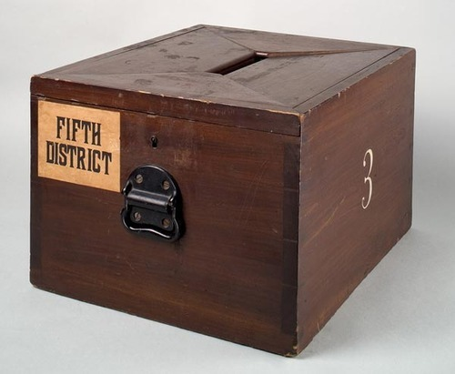

Thu, 04 Nov 2010 02:16:00 · voting · design · UnitedStates
Voting Machines Through Times
Journey back in time… Looking at voting machines through time from the Votomatic to now. I know it’s kind of late… but here’s a gallery of the various devices used to cast the ballots since the founding of the United States.

Thanks to the National Museum of History for maintaining the specimens of the many iterations of those voting ‘machines’.
~ Read complete article and more pix here.